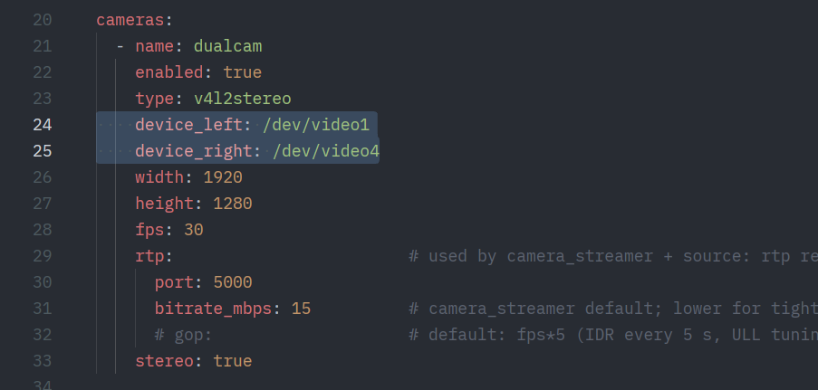
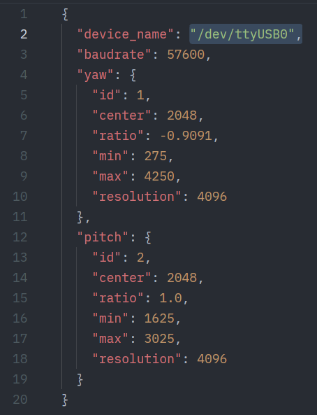

Troubleshooting
There are a few common issues that may arise when running the teleop session. Here is a list of the known ones.
Teleop session not starting despite headset connection
Steps you took:
- You ran the ROS2 launchfile
- You went to the https://nvidia.github.io/IsaacTeleop/client/main/ website and hit connect
The effect:
- The browser ui dissappears, but the head tracking does not work and no camera stream is visible
- The controller model is not rendered
- The "show" button is not rendered
Fix:
- Quit the browser client on the headset and try reconnecting. This usually works in one try
Video feed feels disorienting
There are three possibilities:
- Your left and right camera feeds are swapped
- Your feeds are misaligned
- One of your feeds is not ready
Swapped camera feeds
Navigate to your workspace folder (/workspaces/twist2_neck_demo) then navigate to
the twist2_neck_ros2 package. Then swap the video feeds in camera_config.yaml
cd /workspaces/twist2_neck_demo # location might be different depending on your installation
cd src/twist2_neck_ros2
code camera_config.yaml # or use your preferred code editor

You may need to rerun
colcon build --symlink-install
~/workspaces/twist2_neck_demo) and
you will need to restart the G1 Neck stack (ros2 launch again) (see the deployment page for details).
Misaligned feeds
See the camera alignment steps on how to conduct camera alignment (Accuvision only)
Feed only on one side
One of the decoders might have not initialized properly (due to USB errors, or cameras being unpowered). Reseat USB connections and ensure that you are NOT using a USB hub for the camera feeds, then
Feed works but head is not moving
There are a few possibilities:
- The U2D2 power hub is not turned on
- You are not part of the
dialoutgroup (this should not be the case if you are using the devkit). - The device (port) of the U2D2 is wrong
- This can be configured through the
config.jsonfile insidetwist2_neck_ros2.cd /workspaces/twist2_neck_demo # location might be different depending on your installation cd src/twist2_neck_ros2Change thecode config.json # or use your preferred code editordevice_namefield.

If you are unsure what your port name is, tryThere will be one that 'stands out', such asls /dev/tty*/dev/ttyACM0. That is probably the U2D2's device.
- This can be configured through the